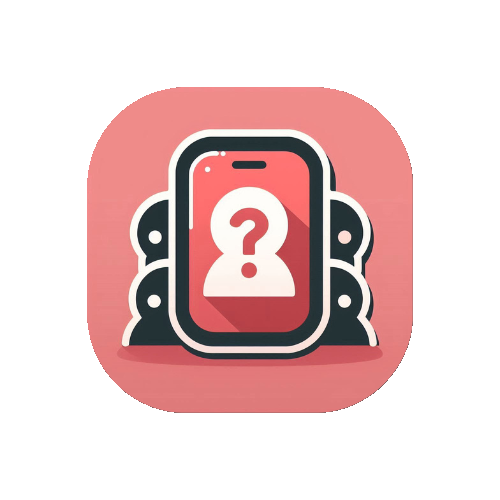

¿Qué es ClueChat?
ClueChat es una aplicación para resolver misterios en grupo. Crea o únete a una sala, debate con tus amigos en el chat y colaboren para encontrar al culpable.
Ayuda y Preguntas Frecuentes
- ¿Cómo creo una sala? Desde la app, pulsa “Crear sala” y comparte el código con tus amigos.
- ¿Qué pasa si cierro la app? Tu usuario se elimina automáticamente y deberás volver a unirte.
- ¿Se guarda mi progreso? No. La app está diseñada para partidas rápidas sin guardado de datos.